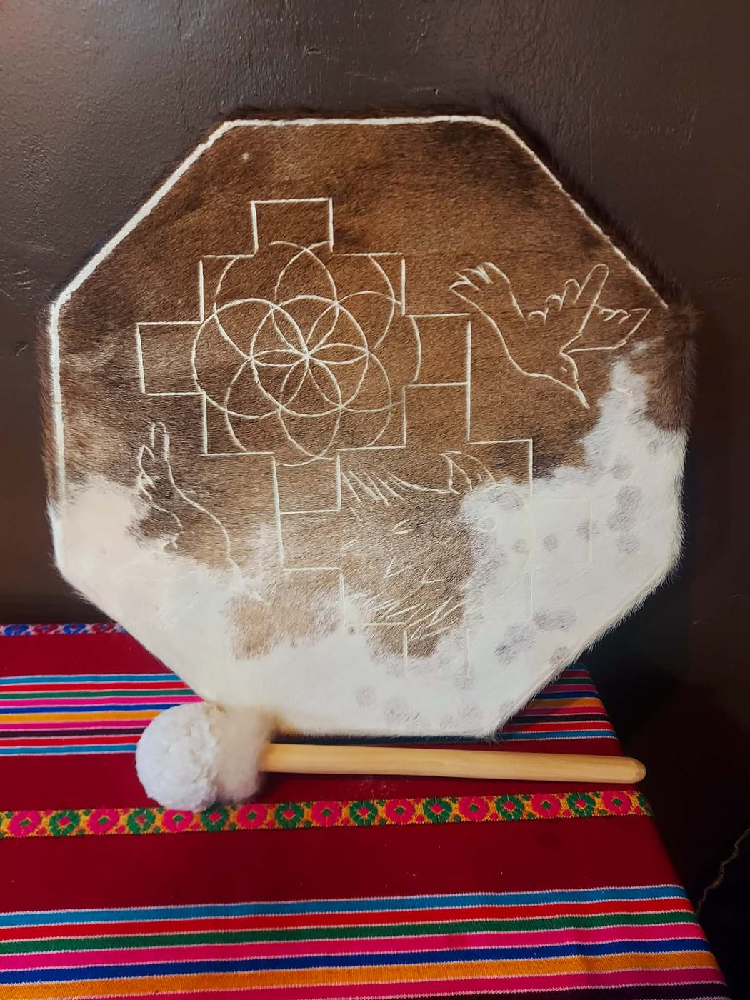

Animaux, nature et tambour La nature, les chevaux, le vivant
Mon univers est très lié à la nature et au vivant. Soigneuse animalière diplômée, je propose aussi mes soins aux chevaux et aux autres animaux.
528Hz Plexus solaire · la transformation
Écouter les fréquencesLe sable dessine la forme du son. Touchez la plaque pour le disperser.
De la peur au lien
Enfant, je suis tombée de cheval un jour d'orage, et la peur m'est restée des années. C'est en me formant au métier de soigneuse animalière, lors d'un stage dans un refuge, que je l'ai affrontée.
Un jour d'orage, justement, les chevaux étaient nerveux. J'ai d'abord chanté pour m'apaiser moi-même, puis pour eux. Depuis, quelque chose a changé entre nous.
Un soin pour un animal
Pour un animal, le soin commence par un toucher : une caresse sur le dos, accompagnée de mantras chuchotés. Ce geste le relie à son corps et le prépare. Vient ensuite le chant.
Le temps de chant est souvent court, un quart d'heure peut suffire, mais je reste auprès de l'animal aussi longtemps qu'il le faut.
Le logo le dit : autour de la personne en méditation se tiennent un perroquet, un chat, un cheval et un caméléon. Je peux travailler avec tous.

Majka, mon tambour
Mon tambour s'appelle Majka, un mot ancien d'origine slave qui veut dire « mère ». Son battement rappelle celui du cœur de la Terre-Mère, la Pachamama : le premier son que tout être entend, avant même de naître, est le cœur de sa mère.
Je l'ai reconnu à Ollantaytambo, au Pérou, au Temple du Soleil. Dès la première frappe, j'ai senti battre un cœur. Il prolonge mon chant, et Anahata, le chakra du cœur.
Pour vous, ou pour votre animal
Réservez un soin, ou écrivez-moi pour en parler d'abord.